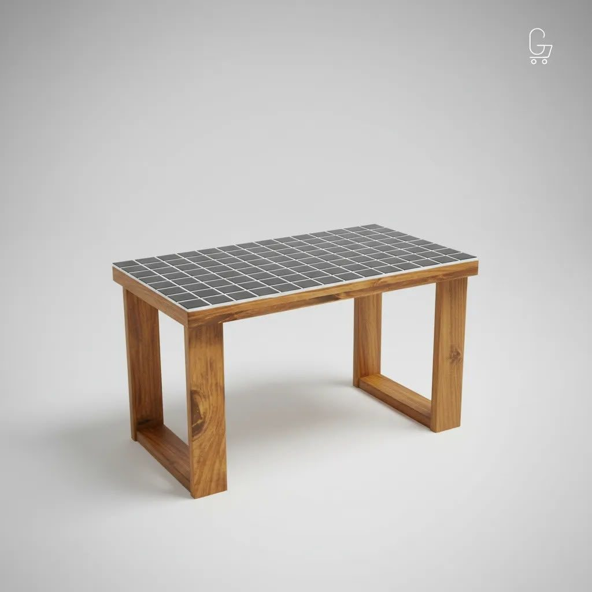
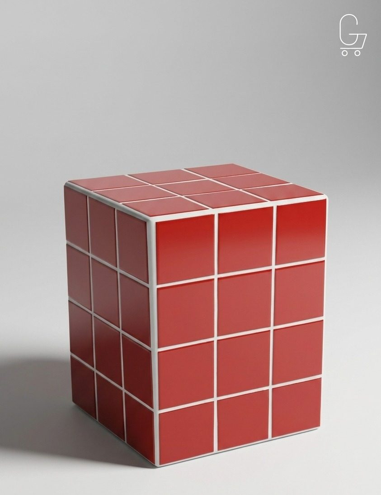

Mesa Ratona · Patas de madera
Estructura de madera maciza y tablero revestido en mosaico cerámico. Un diseño clásico, cálido y personalizable.
Pedir por WhatsAppGanchito
Armá la tuya.
Elegí un color
Girala. Miralá desde arriba. Animate.
Cada pieza de mosaico se corta y se acomoda a mano, una por una.
Se arma pieza por pieza, en nuestro taller de Olavarría.
Una mesa hecha para vos.
Colección

Estructura de madera maciza y tablero revestido en mosaico cerámico. Un diseño clásico, cálido y personalizable.
Pedir por WhatsApp
Completamente revestida en mosaico cerámico. Funciona como mesa lateral, apoyo o pieza decorativa.
Pedir por WhatsApp
Realizada en yeso con base cementicia y revestimiento de mosaico cerámico artesanal.
Pedir por WhatsApp